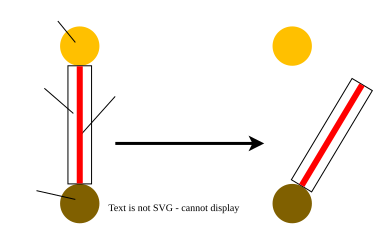

Exemple de consigne
Expliquer comment les fourmis se repèrent pour aller chercher de la nourriture à l'aide du document.
Exemple de document
Les capacités d'orientation des fourmis

le papier
Exemple de réponse
Le schéma montre le résultat d'une expérience sur la façon dont les fourmis se repèrent pour aller chercher de la nourriture.
On voit que les fourmis suivent une piste qui relie le nid à la source de nourriture. Quand on déplace la piste, elles continuent à la suivre même si elles ne parviennent plus à destination.
On peut donc conclure que ce n'est pas grâce à la vue que les fourmis repèrent la nourriture ou leur chemin.